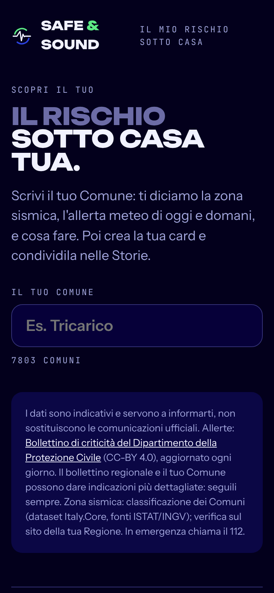
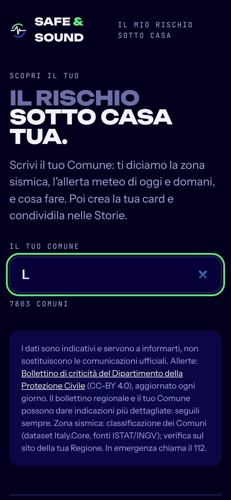
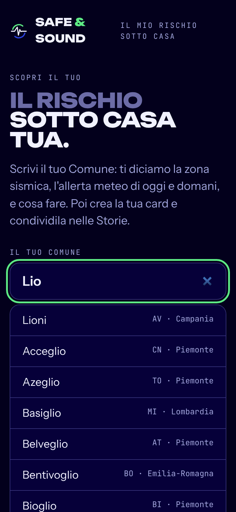
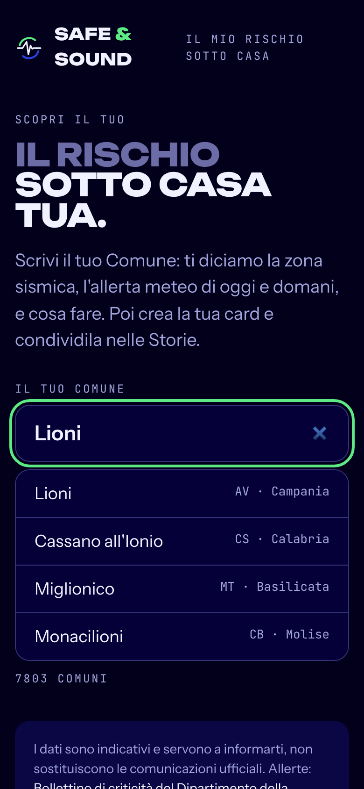
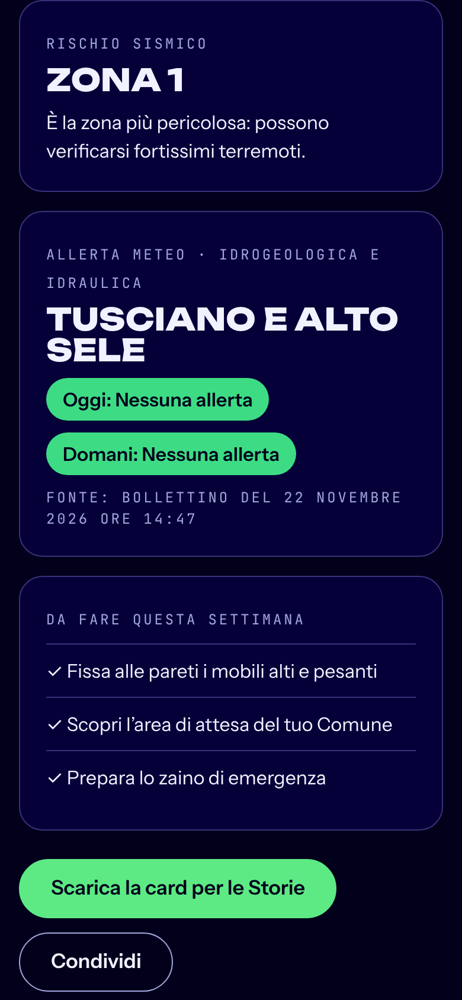

SAFE & SOUNDAccadde oggi · 23.11
domenica sera, 23 novembre 1980
era pronta.
19:34:00
un minuto.
L'Italia nonera pronta.
23.11.1980 · ore 19:34Irpinia eBasilicata.Magnitudo 6.9
2.734vittime.8.848 feriti.
Oltre 400.000 sfollati.fonte: Dipartimento della Protezione Civile
Oltre 400.000 sfollati.fonte: Dipartimento della Protezione Civile
I soccorsi
arrivano.Nessunoli coordina.
arrivano.Nessunoli coordina.
dopo tre giorni di confusionearriva un commissario:Giuseppe
Zamberletti.
Zamberletti.
Da lì nasce la
protezione civile.
protezione civile.
1982il Dipartimento
1992il Servizio nazionale
oggii volontari sono
dentro il sistema
dentro il sistema
Il sistema c'è.
Il primo anello
sei tu.
Il primo anello
sei tu.







Sai dov'è
l'area di attesa
del tuo Comune? Cercala stasera.
Mandalo a chi vive con te.
l'area di attesa
del tuo Comune? Cercala stasera.
Mandalo a chi vive con te.
una rubrica di Formazione
Formazione
e Sicurezza
fonti: Protezione Civile · INGV · Io non rischioFormazionee Sicurezza